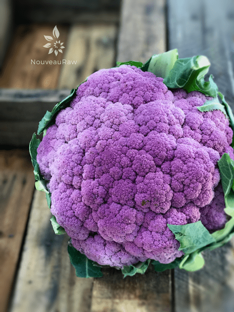

Blueberry Coconut Cauliflower Porridge
 ~ raw, vegan, gluten-free, nut-free, Paleo, AIP ~
~ raw, vegan, gluten-free, nut-free, Paleo, AIP ~
Did you know that the color purple has long been associated with royalty, nobility, luxury, power, and ambition? Purple also represents wealth, extravagance, creativity, wisdom, dignity, grandeur, devotion, peace, pride, mystery, independence, and magic. Shew.
I did feel a bit like royalty while eating this dish due to its deep vibrant color. It did take creativity to design the recipe, as well as some wisdom in how to prepare it correctly. And as I licked my bowl clean, I stood up from the table, pushing back the chair with the power of my legs… I felt pride, I felt peace… and wouldn’t you know, I felt like I had performed a little magic with a head of cauliflower!
Purple cauliflower gets its beautiful hue, which can vary from pale to jewel-toned, from the presence of the antioxidant anthocyanin, which is also found in red cabbage and red wine. They are not genetically engineered. Instead, it is a mixture of heirloom varieties that create that beautiful color.
Purple cauliflower has a milder flavor than white cauliflower. It is sweeter, nuttier, and without the bitterness often experienced in the white version. If you plan on steaming this cauliflower, you can add a splash of lemon juice to keep the color vibrant.
But truth be told, in this recipe, lemon juice wasn’t needed. The color you see in the photo is NOT enhanced. Between the natural color of the purple cauliflower and blueberries, it quickly became that very vibrant purple.
As you build this recipe in your kitchen, you may need to adjust the ingredients. Cauliflower can have an intense flavor, often stemming from how it was grown and harvested. But, as usual, we chefs have many tricks up our sleeves to make flavor adjustments. Here, for instance, the healthy fats found in coconut milk, bring out the cauliflowers mellow essence.
So once you have it blended nice and creamy, give it a taste test before scooping it out. If you want it thinner, add more coconut milk. If the blueberries aren’t sweet enough, you may need to bump up the sweetness level a bit. But before you go adding crazy amounts of sweetener, add that pinch of salt and give it another tasting. Salt amplifies sweetness. In the end, especially when dealing with fresh ingredients, the flavor can change each time you make it.
Also, it will depend on whether you prepare this as a raw “riced” dish or as a creamy cauliflower porridge. Steaming it will decrease the bitterness some, plus it will make it easier to digest if you have a compromised digestive system. Eat according to your body… :)
Garnishing with Violets
Did you know that the leaves and flowers of violets are edible? The leaves can be used raw in salads or cooked like spinach. Their flowers can be eaten raw, and they can be added to soups as a thickener. They do come in several colors, but one thing to be aware of is that the yellow violets can be mildly laxative. The leaves and flowers contain beta-carotene, vitamin C, salicylates, the flavonoid rutin, and mucilage (remember, soup thickener?). When it comes to flavor, they are pungent, bitter, and sweet.
Sweet Violets… Sweeter than all the Roses
Violets have a special meaning to me. Not so much the plant but because of a song called Sweet Violets, which originates from the 1930s. Growing up, my Uncle Lonnie used to sing this song to me, over and over. He is typically a quiet man and has a gruff exterior. But when little Amie Sue came bouncing up with her blond pigtails swinging back and forth, he always melted and cuddled me in his arms. He held a very special place in his heart for me back then and to this day. If you are lucky enough to break through his thick, overgrown beard, the scowled look in his eyes, and his overall intimidating demeanor, you would find a man with one of the most gentle hearts I have ever known. I hope you take a moment to click on the link above and listen to the song. Have a blessed and happy day, amie sue
yields 2 1/2 cups porridge
- 1 large head purple cauliflower (4 cups steamed)
- 1/2 cup coconut milk, raw or canned
- 1/2 cup organic blueberries
- NuNatural Stevia to taste
- Himalayan pink salt
Preparation:
Raw Cauliflower Riced Version:
- Break the cauliflower into small florets, place them in the food processor bowl fitted with the “S” blade. Pulse until it reaches a rice-size texture. Pour into a bowl.
- Cover with cold water and a few ice cubes and let sit for 30 minutes to a few hours.
- This process sweetens the cauliflower, making them easier to enjoy in their raw state.
- Once done soaking, pour into a mesh strainer to drain out the water.
- Then place the cauliflower on a clean linen towel and hand-squeeze out the excess water. Put in a bowl.
- The texture of this method will more like rice pudding with a chewy, toothsome bite. I steamed mine.
Steamed Porridge Version:
- How to Steam Cauliflower In a Steamer Basket
- Bring an inch of water to a boil in the bottom of a pot into which your steamer basket or insert fits.
- Cut or break the cauliflower into similar-sized pieces, so they steam evenly. Place the florets in the steamer basket, set over the boiling water, cover, and steam until fork tender (3-8 minutes).
- Be careful not to overcook because that will increase the bitterness.
- To test for doneness, prick the cauliflower with a fork after four or five minutes. The florets should be fork-tender but still somewhat firm.
Assembly:
- Place the prepared cauliflower in the blender along with the blueberries, coconut milk, stevia, and salt. Blend until creamy.
- You can use any sweetener that you want. (or none at all)
- Garnish with more shredded coconut, blueberries (mine were frozen, that’s how they got that white, frosted look), and organic violets. You can also add cinnamon and sprinkle salt on top. Salt is optional, but it helps to elevate the sweetness and give it that slight balance of flavors.
- Keep in the fridge for a few days.
- If you make this dish ahead of time, keeping it stored in the fridge will thicken it due to the natural pectins found in blueberries.

© AmieSue.com